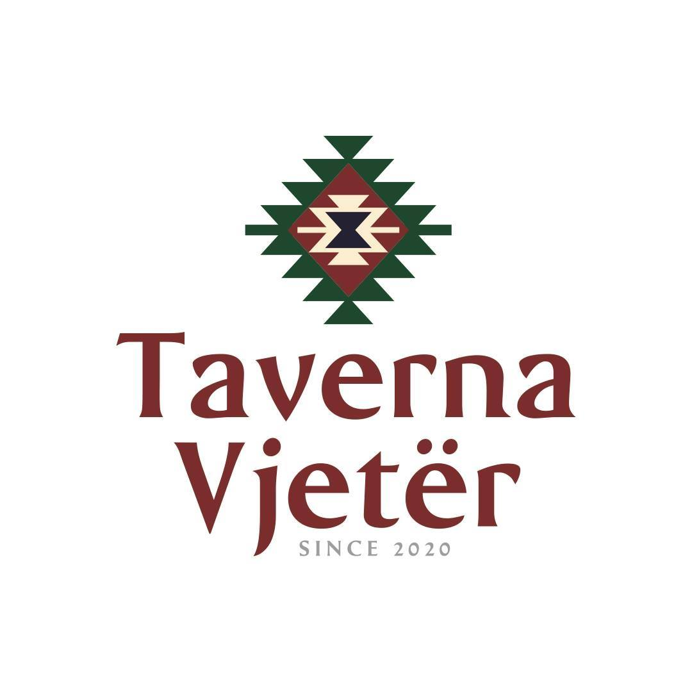
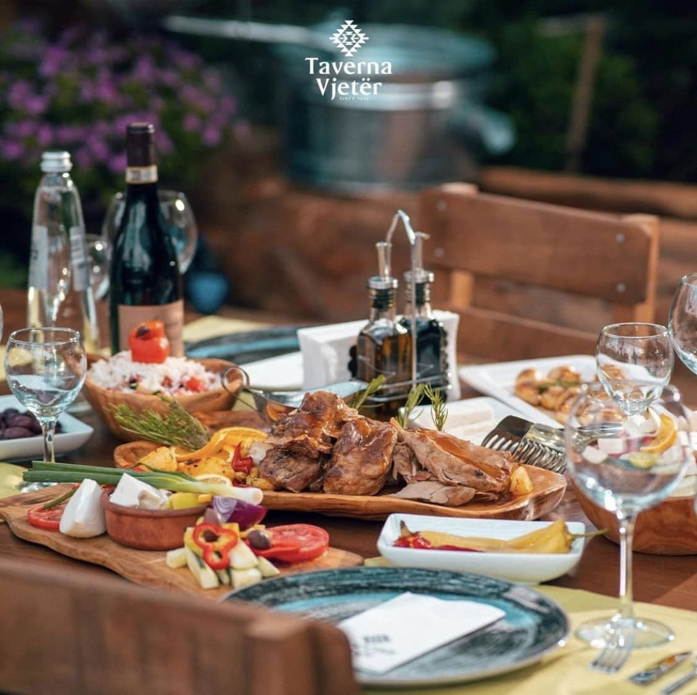
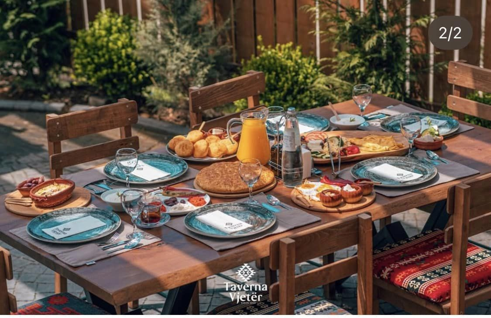

From the outside it looks enchanting, beautiful and peaceful. Clay bricks and intricate wooden carvings make up most of the building's outer structure. It's impossible to see through the stained glass windows, but the music and songs from within can be felt outside. As you enter the tavern through the decorated, wooden door, you're welcomed by the smell of alcohol and a pleasant atmosphere. The bartender is busy, but still manages to welcome you with a short wave. It's as enchanting inside as it is on the outside. Hardwooden beams support the upper floor and the lights attached to them. The walls are packed with rows of painted portraits. You recognize the bartender on one of them, so the others must be either friends, family or previous owners.. The tavern itself is packed. Locals seem to be the primary clientele here, which could be seen as the best sign you can get. Several long tables are occupied by, what seems to be entire families, all enjoying the food, drinks and company of each other. The other, smaller tables are also occupied by people who clearly enjoy each other's company, though they seem to be strangers who have met here. Even most of the stools at the bar are occupied, though nobody seems to mind more company. You did hear rumors about this tavern, supposedly it's famous for something, but you can't remember what for. Though judging by the amount of cups, tankards and glasses on the table, it's probably the fine alcoholic drinks. You manage to find a seat and prepare for what will undoubtedbly be a great evening.
  